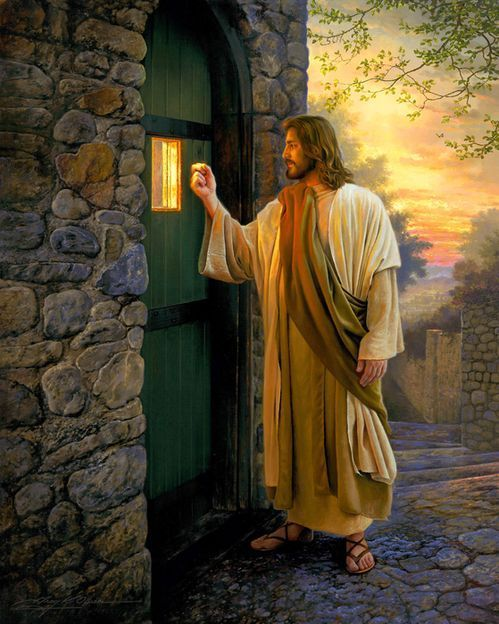

4 BC - 30 AD
“I am the way and the truth and the life. No one comes to the Father except through me. ~ John 14:6
Jesus Christ (c. 4 BC – c. AD 30) was a spiritual Teacher, who preached a gospel of faith, love and forgiveness. His life and teachings led to the emergence of a new religion – Christianity, which became the dominant religious force in the western world. The Christian religion reveres Jesus Christ as the Son of God. Jesus is also an important prophet in Islam, and his teachings are widely admired by other religious traditions.
Jesus was born in Bethlehem, Judea – then part of the Roman Empire, under the rule of Herod. Jesus was born into a Jewish family; his parents were Mary and Joseph of Nazareth. Jesus was born in Bethlehem because his father had to travel to his place of birth to take part in the Roman census. Because of over-crowding due to the census, the family were offered a place in a stable, and hence Jesus was born in the humblest of surroundings – in a manger surrounded by animals.
Blessed are the poor in spirit: for theirs is the kingdom of heaven.
Blessed are they that mourn: for they shall be comforted.
Blessed are the meek: for they shall inherit the earth.
Blessed are they which do hunger and thirst after righteousness: for they shall be filled.
Blessed are the merciful: for they shall obtain mercy.
Blessed are the pure in heart: for they shall see God.
Blessed are the peacemakers: for they shall be called the children of God.
Jesus was then led up to the Calvary to be crucified. He was beaten and taunted by soldiers and some in the crowd. Many others were weeping at the sight of Jesus being taken to his execution. He had to carry a cross and at one stage fainted – and was helped by Simon of Cyrene. Jesus was nailed to the cross with an inscription above his head. “Jesus of Nazareth, the King of the Jews” (INRI). He was crucified in between two thieves As soldiers were dividing up his clothes by casting lots, on the cross Jesus said: